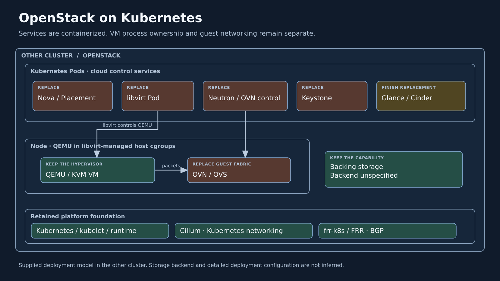
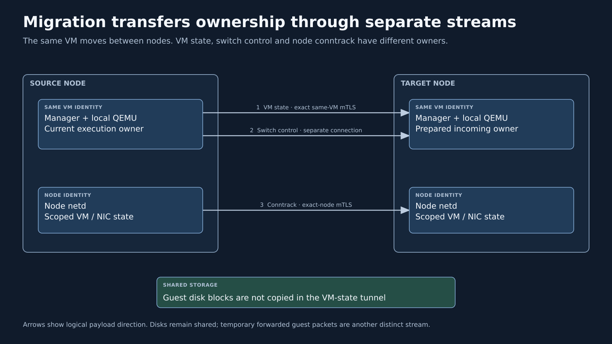
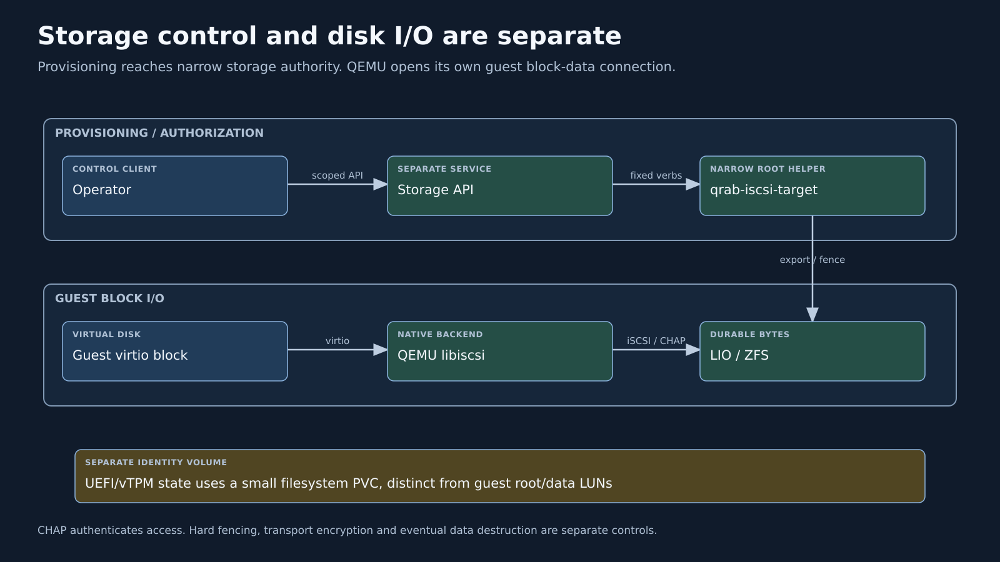

VM architecture and ownership
Where each VM boundary belongs
Engineering architecture review / code and ownership
Evidence: S011 / 18 · engineering

OpenStack: simple boundary overview

qrab: simple target boundary overview
VM architecture and ownership
Remove services; assign the surviving work
| Replace | Responsibility moves to |
|---|---|
| Nova / libvirt | Kubernetes + operator + manager |
| Neutron / OVN | Cilium + anchors + netd + FRR |
| Keystone | API auth/RBAC + OIDC roles + SPIRE |
| Glance / Cinder | Image/disk controllers + storage service |
Evidence: S02, S08, S13, S15, U01, U02, U03, U044 / 18 · engineering
VM architecture and ownership
The code spine follows the ownership split
| Layer | Primary owner |
|---|---|
| QMP/QGA types and transport | qapi-macros / qapi / qapi-protocol |
| Local VM execution | manager |
| Declarative VM + migration + images | operator |
| Guest network attachment | netd + Cilium/FRR integration |
| User management and observation | BMC / Redfish / dashboard / telemetry |
Evidence: S01, S04, S06, S07, S08, S265 / 18 · engineering

Containerized libvirt versus a container-owned VM
VM architecture and ownership
A private QMP owner; a bounded public operation
- Manager owns private QMP, QGA and VNC sessions.
- BMC/Redfish authorize users before local control operations.
- Protocol crates stay independent of Kubernetes, launchers, KVM and guest downloads.
Evidence: S04, S06, S07, S18, S197 / 18 · engineering

Two network planes become one Cilium fabric
VM architecture and ownership
One datapath still needs explicit control
- Operator claims stable /32s and writes scoped FRR intent.
- netd grants only authorized TAP/vhost descriptors.
- Cilium policies enforce groups; labels alone do not create default deny.
Evidence: S08, S09, S10, M01, U06, U079 / 18 · engineering

Migration: simple ownership and stream overview
VM architecture and ownership
A migration is an ownership transfer
- Prepare a compatible target with empty identity state and fenced NICs.
- Switch endpoint authority in the final pause; then adopt the exact target.
- Refuse unsupported management state or auxiliary claims before unsafe side effects.
Evidence: S05, S08, S11, S12, S1311 / 18 · engineering
VM architecture and ownership
Three questions; three policy owners
| Question | Owner |
|---|---|
| Who is the human? | Existing OIDC provider |
| May this actor do this? | Kubernetes RBAC/admission or VM app roles |
| Which service is calling? | SPIFFE/SPIRE + exact peer policy |
Evidence: S18, S19, S20, S2312 / 18 · engineering

Storage: simple control and I/O overview
VM architecture and ownership
Images and volumes: useful foundation, explicit remaining scope
Already implemented
Verified imports · sealed generations · CoW clones · online growth · fencing
Finish the required subset
Publication/sharing · distribution · backup/restore · quotas · recovery drills
Keep the authority split
Storage owns bytes/fences. Operator orchestrates. QEMU performs block I/O.
Evidence: S13, S14, S15, U03, U0414 / 18 · engineering
VM architecture and ownership
Failures require evidence of the old owner
- Pod disappearance is not a hard storage fence.
- A guest power-off is not declarative Pod removal.
- Kubelet Applied resource limits are not guest hotplug/onlining proof.
Evidence: S02, S03, S04, S1315 / 18 · engineering
VM architecture and ownership
The review found real boundary bugs
- Cleanup used labels/access lists as lifecycle ownership.
- A verified qcow2 file could select unverified backing/data inputs.
- A host cgroup name could masquerade as a Kubernetes Pod identity.
Evidence: A01, A02, A04, A0516 / 18 · engineering
VM architecture and ownership
Required proof classes stay separate
| Evidence class | What it can establish |
|---|---|
| Source / unit tests | Implemented behavior and refusal paths |
| Rendered manifests | Requested deployment and policy |
| Explicit real-tool / kernel tests | The named local integration behavior |
| Dated live acceptance | A scoped test of named deployed releases |
Evidence: M01, M02, T01, L0117 / 18 · engineering
VM architecture and ownership
Review decisions, not only component count
- Assign every surviving OpenStack duty to an explicit owner.
- Accept the required image/volume/network/recovery subset.
- Maintain the Cilium fork and privileged helper contracts as real dependencies.
Evidence: S01, S08, S13, S1518 / 18 · engineering